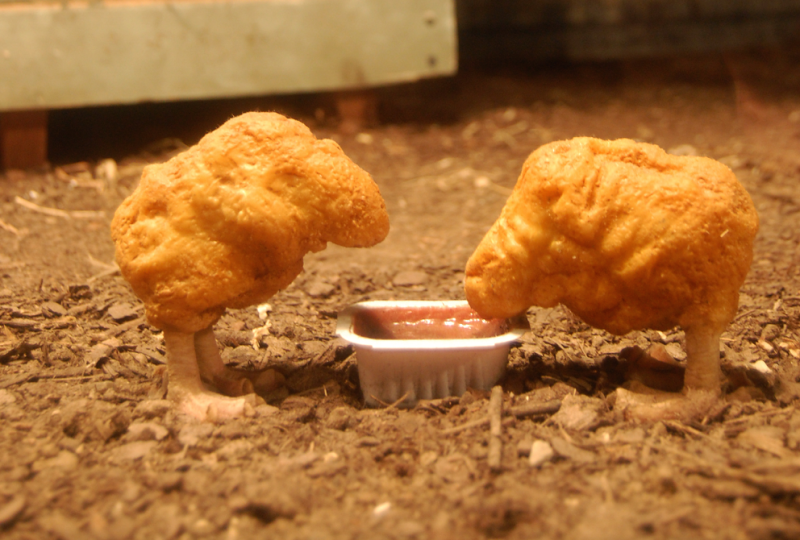

Dont even try to go to McDonalds for dem chickets. Makes about 2 1/2 dozen
Prep: 15 minutes
Total: 4 hours
Ingredients
pound|450 grams ground chicken breast
teaspoon garlic salt
teaspoon onion powder
kosher salt, to taste
1 cup|180 grams all-purpose flour
tablespoons|50 grams cornstarch
1 large egg, lightly beaten
1/4 cup|60 ml whole milk
3/4 cup|190 ml seltzer wate
canola oil, for frying
Directions
1. Line a baking sheet with parchment paper and set aside.
2. Place the chicken, garlic salt, onion powder, and salt in a food processor and purée until it forms a paste. Portion the chicken into 1/2 ounce pieces and flatten out slightly on the prepared baking sheet. Place in the freezer for 2 hours.
3. Meanwhile, combine half of the flour, 4 tablespoons of the cornstarch, and salt in a medium bowl. In another medium bowl, stir the egg with the milk. Working with 1 nugget at a time, dip the nugget into the dry ingredients, tossing to coat completely. Transfer the nugget to the milk and egg mixture, again tossing it gently to coat completely, then back into the flour mixture one more time. Place the remaining flour and cornstarch in a bowl and whisk in the seltzer. Working with one nugget at a time, toss the nugget in the batter. Change the parchment paper on the baking sheets and transfer the nuggets to the baking sheet.

4. Heat 2-inches of oil in a large saucepan until a deep-fry thermometer reaches 325°F. Working in batches, fry the nuggets, turning gently to make sure that they color evenly, for 1 1/2 minutes, or until lightly golden brown. Using a slotted spoon, transfer to a baking sheet and refrigerate for 1 hour.
5. Increase the heat for the oil until a deep-fry thermometer reaches 375°F. Working in batches, fry the nuggets until golden brown, about 3 minutes. Using a slotted spoon, transfer to a paper towel-lined baking sheet and season with salt. Serve with your favorite dipping sauce.
Here is an excellent video of Blue Birds. We have also make thisexceptional game which I hope motivates the rest of you to eat my homemade McNuggets